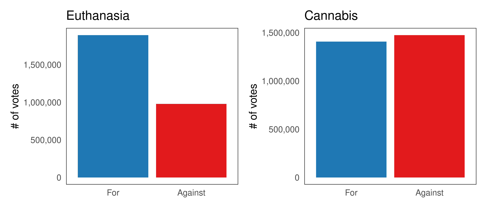
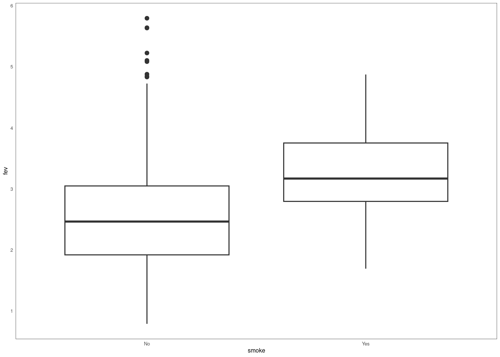

3 Design
3.0.1 Factors
Factors provide a way to partition the data into multiple disjoint parts.
3.0.1.1 Product factors
We can combine a factor with \(j\) levels and another factor with \(k\) levels into a product factor with up to \(j \cdot k\) levels.
I independently discovered a formula similar to (Wickham 2013):
\[i_{\text{product}} = i_1 + i_2 \cdot \max(j, k)\]
3.0.2 Reducers
(Gray et al. 1997) came up with OLAP data cube
3.0.3 Scales
Most data visualization packages rely on some concept of scales. While there is some overlap with scales discussed in INTRODUCTION, here I mean scales as objects (in a broad sense: they may be functions, classes, etc…) which are used to translate values from the data space (domain) to the graphical space (codomain).
Many packages implement scales with domain and codomain as two components, however these often tend to have distinct interfaces. For example, the D3 library (Bostock, Ogievetsky, and Heer 2011) takes a data-centric approach, with domain and range (= codomain) implemented as tuples or arrays of values, and during the translation step each is called via a different specialized function (e.g. normalize() and scale() functions for continuous and discrete/ordinal domains and various interpolate() functions for codomains). Similarly, in the scales package (R-scales?), the scaling operation relies on a limits vector (2-element numeric vector for continuous scales and an arbitrary-length character vector/factor for discrete), a palette() function (corresponding to the codomain), and map_discrete() or map_continuous() function (which further relies on a rescale() method).
In plotscaper, scales also consist of two components, however, both components share the same interface. Specifically, each scale consists of a domain and codomain which both implement the interface Expanse<T>. Expanse<T> is generic and hence Scale<T, U> has two type arguments: the type of its domain and the type of its codomain. The way scale can be used then is that it can be used to push values forward through its domain first and codomain second, or pull them back, through its codomain first and domain second. Hence, the basic interface for a scale is:
interface Scale<T, U> {
domain: Expanse<T>
codomain: Expanse<U>
pushforward(value: T): U
pullback(value: U): T
}
3.0.4 Expanses
Expanses provide a way to translate between data values and relative proportions of graphical encodings, such as the x- and y-axis position, area, or size. Formally speaking, an expanse is a set of some possible data values \(D\), together with a pair of maps:
- A normalize map \(n: D \to \mathbb{R}\)
- An unnormalize map \(u: \mathbb{R} \to D\)
This may seem rather abstract, however, what might make things clearer is that most of the time we will be dealing with specific subsets of \(D\) and \(\mathbb{R}\): observed data \(D^* \subseteq D\) and percentages \(p^* \in [0, 1] \subset \mathbb{R}\). Then, provided that the expanse has been trained on the observed data values and no adjustments such as expanding margins, zooming, or panning have been made:
- The normalize map translates observed data to percentages: \(n(d^*) \to [0, 1]\)
- The unnormalize map translates percentages to observed data: \(u(p^*) \to D^*\)
3.0.4.1 Zero and One
The maps may also take in and return values outside of \(D^*\) and \([0, 1]\), if adjustments have been made. For instance, in most data visualization packages, x- and y-axis limits are by default expanded some percentage beyond the range of the observed data to avoid the maximum and minimum datapoints from overlapping with the limits. For example, in base R:
set.seed(12345)
x <- rnorm(5)
y <- rnorm(5)
par(mfrow = c(1, 2))
plot(x, y, col = "red", pch = 19)
plot(x, y, xaxs = 'i', yaxs = 'i', col = "red", pch = 19) 
Figure 3.1: Expanding axes. By default, axes in base R plot() function are expanded 4% beyond the range of the data (left). Otherwise, datapoints on the limits of their respective scales end up overlapping with the plot borders (right).
Thus, upon normalizing the minimum and maximum data values, the expanse should return values other than \(\{0, 1\}\). Likewise, to support user interactions such as zooming and panning, the expanses may accept and return values outside of \(D^*\) and \([0, 1]\).
Zooming and panning should be orthogonal to the underlying data type, such that user can interact with the plots the same way1, no matter whether their axes are continuous, discrete, or some combination of the two. To this end, I introduce two parameters representing the normalized value (\(p\)) of the minimum and maximum data point, called zero and one respectively. These parameters are agnostic to the underlying data type, such that if we have the data type-specific maps \(n'\) and \(u'\), the complete normalize and unnormalize maps are:
\[n(d) = \text{zero} + n'(d) \cdot (\text{one} - \text{zero})\] \[u(p) = u' \bigg(\frac{p - \text{zero}}{\text{one} - \text{zero}} \bigg)\]
To simplify, here’s what effect setting the two parameters to specific values has:
| Zero | One | Effect |
|---|---|---|
| 0.05 | 0.95 | Expands the margins by ~5% (actually 5.555…% since 0.05 / 0.9 = 0.0555…) |
| 0.05 | 1.05 | Shifts the expanse ‘up’ by 5% (e.g. moves x-axis 5% right) |
| -0.50 | 1.50 | Zooms into the middle 50% of the expanse (25 percentile goes to 0 and 75th to one) |
3.0.4.2 Expanse Interface
There are also other behaviours that expanses should support. For instance, we may want to be able to reset the expanse to defaults, retrain when the underlying data changes, and return nicely formatted breaks. How these behaviours are implemented, as well as other types of behavior, may be specific to the underlying data type. Overall, expanse interface may look something like this:
interface Expanse<T> {
normalize(value: T): number
unnormalize(value: number): T
defaultize(): this
setZero(zero: number, default: boolean): this
setOne(one: number, default: boolean): this
freezeZero(): this
freezeOne(): this
move(amount: number): this
expand(zero: number, one: number): this
retrain(values: T[]): this
breaks(n?: number): T[]
}3.0.4.3 Continuous Expanses
The continuous expanse has as its underlying set \([\min, \max] \subseteq \mathbb{R}\). To understand how it works, let’s build it step by step.
We start with the basic normalizing function:
- \[n(d) = \frac{d - \min}{\max - \min}\]
This function takes some data value \(d \in [\min, \max]\) and transforms it to \([0, 1]\). Most data visualization systems use a function like this at some step of the scaling processs - see scales::rescale and D3 normalize.
This may work well for typical linear scales. However, we may also want to apply some transformation \(f\), such as square root or log. Then, to ensure that the observed data values still get normalized to \([0, 1]\), we need to apply the transformation to both \(d\) and the limits:
- \[\frac{f(d) - f(\min)}{f(\max) - f(\min)}\]
Finally, as was discussed in EXPANSES, we want to be able to incorporate the zero and one paramaters, leading to the final normalizing function:
\[n(d) = \text{zero} + \frac{f(d) - f(\min)}{f(\max) - f(\min)} \cdot (\text{zero} - \text{one})\]
To obtain the unnormalizing function, we can simply invert the normalizing function:
\[u(p) = f^{-1} \bigg\{ f(\min) + \frac{p - \text{zero}}{\text{one} - \text{zero}} \cdot \big[ f(\max) - f(\min) \big] \bigg\}\]
The function transforms \(x\) to a percentage value \(p \in [0, 1]\), provided \(x\) is within \([\min, \max]\). The value \((\max - \min)\) is also sometimes called the range (not to be confused with D3 range).
We can invert the normalizing function and obtain the unnormalizing function, which is, for some percentage \(p \in [0, 1]\):
\[u(p) = \min + p \cdot (\max - \min)\] returns a value within the \([\min, \max]\) range, corresponding to the proportion of the maximum possible distance (range) from the origin (\(\min\)). For example, \(u(0.5)\), returns a value that is located halfway between the limits.
We can implement a simple continuous expanse like so:
function identity<T>(x: T) {
return x;
}
function expanseContinuous(min = 0, max = 1) {
const [zero, one] = [0, 1]
const [trans, inv] = [identity, identity]
return { min, max, zero, one, trans, inv,
range() {
return this.max - this.min;
},
transRange() {
const { min, max, trans } = this;
return trans(max) - trans(min);
},
normalize(x: number) {
const { min, zero, one, trans } = this;
const normalized = (trans(x) - trans(min)) / this.transRange();
return zero + normalized * (one - zero);
},
unnormalize(p: number) {
const { min, zero, one, trans, inv } = this;
return inv(trans(min) + ((p - zero) / (one - zero)) * this.transRange());
},
};
}
const expanse1 = expanseContinuous(1, 10);
console.log(expanse1.normalize(5));
console.log(expanse1.unnormalize(0.5))## 0.4444444444444444
## 5.5The functions \(n, u\) have several interesting properties. First off, they are inverses to each other and form an isomorphism, i.e. \(u = n^{-1}\) and \(n = u^{-1}\) such that \(u(n(x)) = x\) and \(n(u(p)) = p\). This also means that each function is a 1-to-1 mapping or bijection. In plain words, this means that we cannot get the same percentage by normalizing two different values and vice versa. As a result, we can keep switching between the normalized and unnormalized representations without losing any information:
## [1] 5## [1] 0.53.0.4.3.1 Linearity
Another important thing to note is that, while these types of normalizing functions are often called “linear” (e.g. scaleLinear() in D3), since their graphs form a straight line, they should not be confused with “linear functions”, since they do not satisfy the properties of linear functions, namely:
- Additivity: \(\text{normalize}(x + c) \neq \text{normalize}(x) + \text{normalize}(c)\)
- Homogeneity of degree 1: \(\text{normalize}(c \cdot x) \neq c \cdot \text{normalize(x)}\).
To illustrate, additivity does not hold when \(\min \neq 0\) because:
\[\frac{(x + c) - \min}{(\max - \min)}\] \[= \frac{x - \min}{\max - \min} + \frac{c}{\max - \min}\] \[\neq \frac{x - \min}{\max - min} + \frac{c - \min}{\max - \min}\]
The same can be easily shown for the \(\text{unnormalize}\) map and for homogeneity.
Technically, this is due to a confusion between the definition of a “linear function” and a “linear polynomial”. The appropriate term to use would actually be “affine transformation.”
Either way, if the minimum is not 0, we cannot expect the following to be equal:
## [1] 1.0000000 0.9273474Or the following to be equal:
## [1] 1.749319 2.000000However, if we keep in mind the fact that the normalizing function calculates the proportion of distance from the origin, we can see that the function in fact behaves linearly within the context of its limits.
For example, consider the range \([1, 10]\). The value \(5\) is \(4\) units away from the lower limit, i.e. \(5 - 1 = 4\), so we can represent it, for example, as the sum of a value that is 3 units away and another that is one unit away, \(n(5) = n(4) + n(2)\):
## [1] 1.000000 1.144123Likewise, again because \(5\) represents the distance of \(4\) units and \(3\) of \(2\), we can expect \(n(5) = 2 \cdot n(3)\):
## [1] 1.000000 1.1844833.0.4.3.2 Transformations
We can apply transformations to continuous expanses by transforming their limits. The outcome of this is that \(\min\) and \(\max\) still get mapped to \(0\) and \(1\) however, the graph of the function is no longer linear. Suppose we have non-linear function \(f\), along with an inverse \(f^{-1}\). Then:
\[n(x) = \frac{f(x) - f(\min)}{f(\max) - f(\min)}\] \[u(p) = f^{-1} \bigg\{f(\min) + p \cdot \big[ f(\max) - f(\min) \big] \bigg\}\] For example, here’s how we could apply the transformation \(\bigg( f(x) = \sqrt{x}, \; f^{-1}(x) = x^2 \bigg)\) in code:
expanse$trans <- sqrt
expanse$inv <- function(x) x^2
# Need to redefine normalize and unnormalize
expanse$trans_range <- function() with(expanse, trans(max) - trans(min))
expanse$normalize <- function(x) {
with(expanse, (trans(x) - trans(min)) / trans_range())
}
expanse$unnormalize <- function(p) {
with(expanse, inv(trans(min) + p * trans_range()))
}
# Normalizing limits still returns c(0, 1)
c(expanse$normalize(c(1, 10)))## [1] 0.000000 1.749319## [1] 1## [1] 2.618034x <- seq(1, 10, length = 100)
p <- seq(0, 1, length = 100)
# The graphs are no longer linear
par(mfrow = c(1, 2))
plot(x, expanse$normalize(x), type = "l", ylab = "normalize(x)")
plot(p, expanse$unnormalize(p), type = "l", ylab = "unnormalize(p)")
Transformations such as these can be useful in two ways. First, sometimes we may be able to better see trends in the data when the data has been appropriately transformed. This is the case, for example, when plotting data which varies across orders of magnitude. In this case it may be useful to apply \(\log\)-transformation. Second, transformations can also be helpful in situations where some graphical attributes are not perceived linearly. For example, when judging differently sized objects, viewers tend judge magnitude based on area rather than side or radius. As such, when drawing objects such as points or squares it can be helpful to apply square root as the inverse transformation. The idea is that, if one point has a data value that is \(c\) times bigger than another, it will have \(\sqrt{c}\) times bigger radius and \(c\) times bigger area. Note that we are talking about the inverse transformation here, i.e. the transformation affecting the unnormalizing function.
One thing to note is that the proportionality of the square-root transformation holds only when \(\min = 0\). Otherwise:
\[\sqrt{(\min)^2 + cp \cdot [(\max)^2 - (\min)^2]}\] \[= \sqrt{c} \cdot \sqrt{(\min)^2/c + p \cdot [(\max)^2 - (\min)^2]}\] \[\neq \sqrt{c} \cdot \sqrt{(\min)^2 + p \cdot [(\max)^2 - (\min)^2]}\]
This is a problem in the existing packages. For example:
library(scales)
pal <- area_pal(c(1, 5))
# Comparing cscale to naive implementation
all.equal(cscale(1:5, pal), sqrt((1:5 - 1) / 4) * 4 + 1)## [1] TRUE# Should be equal since 3 is twice as far from 1 as 2 is
c(cscale(1:5, pal)[3] / cscale(1:5, pal)[2],
sqrt(2))## [1] 1.276142 1.414214## [1] 1.000000 3.000000 3.828427 4.464102 5.000000## [1] 1.555542 2.233313 3.033313 3.955542 5.000000## $min
## [1] 1
##
## $max
## [1] 5
##
## $trans
## function (x) .Primitive("sqrt")
##
## $inv
## function(x) x^2
## <bytecode: 0x55913bc87e38>
##
## $range
## function() self$max - self$min
## <bytecode: 0x559141b3de20>
## <environment: 0x559141478f50>
##
## $trans_range
## function() with(expanse, trans(max) - trans(min))
## <bytecode: 0x55913cc149f8>
##
## $normalize
## function(x) {
## with(expanse, (trans(x) - trans(min)) / trans_range())
## }
## <bytecode: 0x55913cd8f490>
##
## $unnormalize
## function(p) {
## with(expanse, inv(trans(min) + p * trans_range()))
## }
## <bytecode: 0x55913b32bb08>
References
The one exception may be panning barplots and histograms, where the y-axis upper y-axis limit may change but the lower should be fixed at 0, such that panning may shrink or stretch the bars, but not “lift” them up or move them down.↩︎